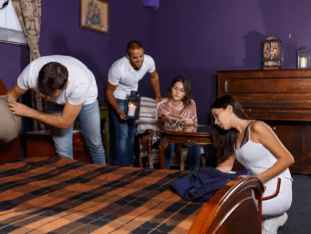
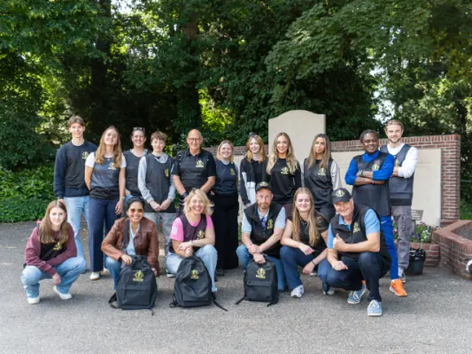
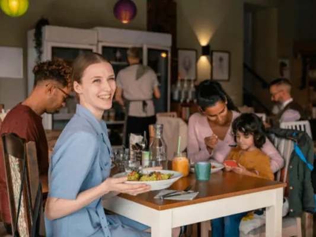
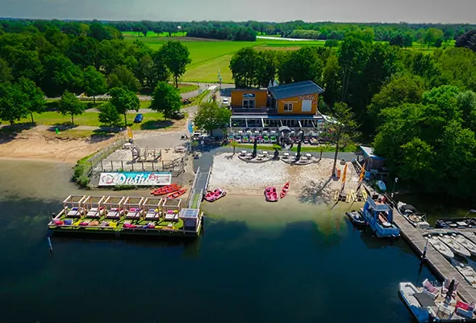
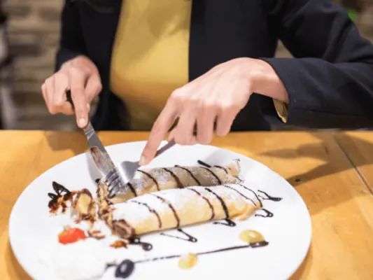
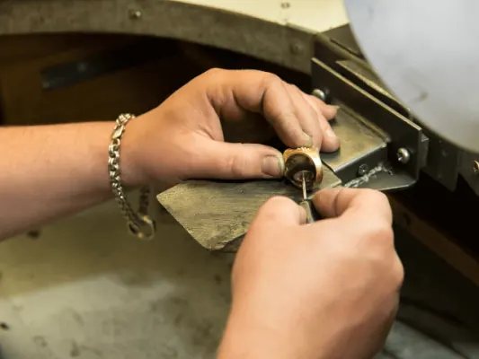
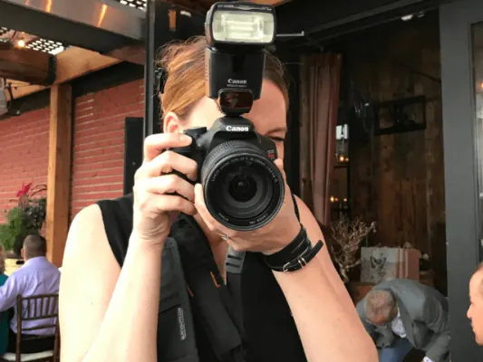
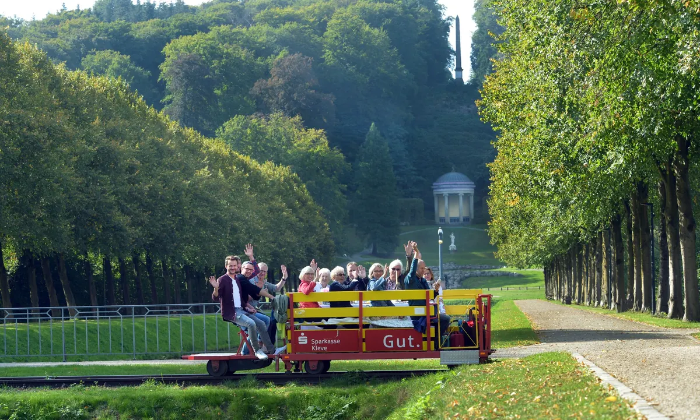

Gids
Uitjes en activiteiten in Nijmegen
Bijgewerkt op
In het kort: Uitjes in Nijmegen zijn onder meer escape rooms, boottochten en suppen op de Waal, musea, workshops van edelsmeden tot fotografie, en de natuur rond de stad. Deze gids sorteert de ideeën: met vrienden of collega's, op het water, met kinderen, cultuur en workshops, en net buiten de stad.
Iets leuks doen in Nijmegen? De stad heeft escape rooms, boottochten en suppen op de Waal, musea voor jong en oud, workshops van edelsmeden tot fotografie en volop natuur om de hoek. In deze gids staan de ideeën voor een uitje bij elkaar, voor een middag met vrienden, een teamuitje met collega's of een dag met de kinderen.
Met vrienden of collega's
Van escape room tot een avond happen en stappen: de leukste activiteiten om samen te doen, en ideeën voor een teamuitje met spanning, natuur en eten.

Activiteiten in Nijmegen
Met een groep iets leuks doen in Nijmegen? Dit zijn de leukste activiteiten om samen te doen en de stad te leren kennen, van escape room tot meer.

5x een bijzonder uitje in Nijmegen
Iets leuks doen in Nijmegen? Dit zijn 5 bijzondere uitjes in en rond de stad, voor een dagje uit met vrienden, familie of collega's.

Teamuitje Nijmegen: spanning, natuur en culinair genieten
Een teamuitje in Nijmegen organiseren? Ideeën vol spanning, natuur en culinair genieten om je collega's dichter bij elkaar te brengen.

Happen & Stappen in Nijmegen – Een Wereld aan Mogelijkheden
Wandelen en onderweg eten bij de beste restaurants: zo werkt happen en stappen in Nijmegen, met routes en tips.
Op en aan het water
Nijmegen ligt aan de Waal: huur een sup of een boot, of ga naar het strand aan de Spiegelwaal of bij Dushi.

Over het water Nijmegen verkennen? Zo doe je dat!
Nijmegen vanaf het water ontdekken? Zo kun je de Waal op, met een sloep of bootje huren, voor een dagje uit met het gezin of een bedrijfsuitje.

Water-hotspot buiten Nijmegen? Ontdek Dushi!
Een dagje aan het water vlak bij Nijmegen? Ontdek Dushi aan de Mookerplas, met strandpaviljoen, watersport en arrangementen.

De Waalkade in Nijmegen
De Waalkade in Nijmegen: terrassen aan de Waal, Museum De Bastei en Velorama, de Vierdaagsefeesten, de Waalbrug uit 1936, hoogwater en parkeren.
Met kinderen
Parken met speeltuinen, musea die gratis zijn voor kinderen, zwembaden met glijbanen en restaurants waar kinderen welkom zijn.

Nijmegen met kinderen
Nijmegen met kinderen: parken met speeltuin en hertenkamp, het strand aan de Spiegelwaal, musea voor kinderen, zwembaden en tips bij regen. Alle uitjes…
Zwembaden in Nijmegen
Alle zwembaden in Nijmegen op een rij: Nijmegen-West, Erica Terpstra en Dukenburg, het Goffertbad, zwemplassen in de buurt, prijzen en tips met kinderen.

Uit eten met kinderen in Nijmegen? Deze locaties mag je niet missen
Uit eten met kleine kinderen? Dit zijn de leukste kindvriendelijke restaurants in Nijmegen, met speelhoek, kindermenu of buitenruimte.
Kermis in Nijmegen
Kermis in Nijmegen: de zomerkermis in juni en de najaarskermis in oktober. Data, waar de attracties staan, openingstijden, prikkelarme middag en parkeren.
Cultuur en workshops
Een middag in het museum, een film, of zelf aan de slag bij een cursus edelsmeden, houtbewerking of fotografie.

Valkhof en Hunnerpark in Nijmegen
Alles over het Valkhof in Nijmegen: het vernieuwde Valkhof Museum (tijden en prijzen), het Valkhofpark met de Sint-Nicolaaskapel, het Hunnerpark en de…

De Bastei in Nijmegen
Bezoek De Bastei aan de Waalkade in Nijmegen: openingstijden, entreeprijzen, de Stratemakerstoren, Romeinse muren, natuur van de Waal en hoe je er komt.

Bioscopen in Nijmegen
Naar de film in Nijmegen? Overzicht van de bioscopen in de stad, van LUX tot De Dromaai, met tips om je filmavond te combineren met eten.

Top 5 Cursussen Edelsmeden in Nijmegen: Vind Jouw Creatieve Spark
Zelf sieraden maken? Dit zijn de 5 beste cursussen edelsmeden in Nijmegen, voor beginners en gevorderden, van workshop tot meerdaagse cursus.

Fotografie Workshops Nijmegen
Beter leren fotograferen? Overzicht van fotografie workshops en cursussen in Nijmegen, van basiscursus tot stadsfotografie.
Net buiten de stad
Wandelen in de Ooijpolder of op de Duivelsberg, een dagje Kleef net over de grens, of verder weg naar zee of stad.

Ooijpolder bij Nijmegen
Alles over de Ooijpolder bij Nijmegen: wandel- en fietsroutes, de Bisonbaai, de Duivelsberg, dieren, eten en drinken en waar je parkeert.

De Duivelsberg bij Berg en Dal
De Duivelsberg bij Berg en Dal: 75,9 meter hoog, bos met tamme kastanjes, pannenkoekenrestaurant op de top, wandelroutes, parkeren en waarom de heuvel…

7x Kleef net over de grens bij Nijmegen
Een dagje Kleef (Kleve) vanuit Nijmegen? Dit zijn 7 leuke tips in het stadje net over de grens, van de Schwanenburg tot gezellig winkelen.

Zin in zee of stad? 3x perfecte uitstapjes buiten Nijmegen
Even de stad uit? Drie perfecte uitstapjes vanuit Nijmegen, naar zee, een bruisende stad of de natuur, voor een dag of een heel weekend.
Andere gidsen: zien en doen
Uitjes in Nijmegen

UitgelichtFietsen op het SpoorBahnhofstraße 15, 47559 KranenburgBekijk aanbodPlanet AwesomeNijmegenbowlenlasergamenkartenmidgetgolfWilliam Smulders - Zanger & GitaristNijmegenparticulierenzakelijke klantenaan huis of op locatiePaintball NijmegenMeeuwseacker 2030, 6546 DZ NijmegenvrijgezellenfeestkinderfeestjegroepenbedrijfsuitjeNightingale KaraokebarEerste Walstraat 18, 6511 GG NijmegenkaraokebedrijfsuitjevrijgezellenfeestgroepenNijmeegs HofbalStichting Club van 111 Hofraad, Dalidastraat 45, 6663 MJ Lenteten en drinkenconcertenRoxy's karaokebarPlatenmakersstraat 3, 6511 TZ NijmegenkaraokevrijgezellenfeestbedrijfsuitjegroepenMobiel Casino NederlandRoggeweg 26, 6534 AJ NijmegenbedrijfsuitjegroepenDe SwingNijmegenclub en dansenonline ticketsHeb je zelf een uitje? Kom hier als partner te staan.
Veelgestelde vragen
Wat kun je doen in Nijmegen met vrienden?
Een escape room, suppen of varen op de Waal, een middag happen en stappen in de binnenstad, een biercafé of een museum. Onze pagina's over activiteiten en bijzondere uitjes geven de adressen.
Wat is leuk om te doen in Nijmegen met kinderen?
Het Kronenburgerpark met hertenkamp en speeltuin, het Valkhof Museum (tot en met 17 jaar gratis), De Bastei, zwembad Nijmegen-West met glijbaan en in de zomer het strand aan de Spiegelwaal.
Wat kun je doen in Nijmegen als het regent?
Zwemmen, naar de bioscoop, een museum zoals het Valkhof Museum of De Bastei, een escape room of een workshop.
Kun je varen op de Waal in Nijmegen?
Ja, er zijn rondvaarten vanaf de Waalkade en je kunt een sup of boot huren. Zie onze pagina over Nijmegen op het water.